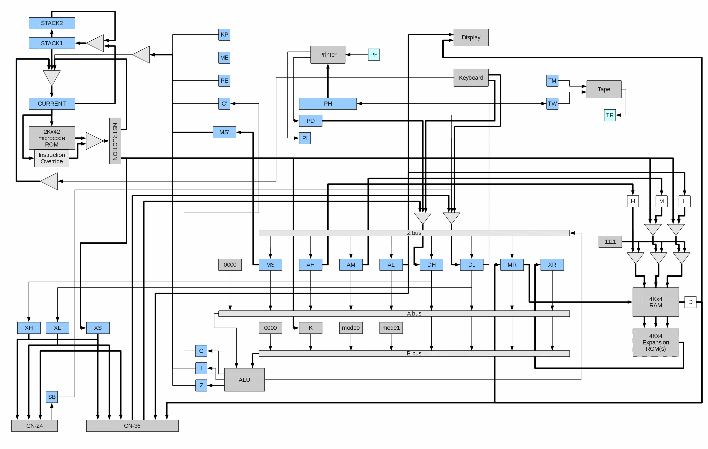
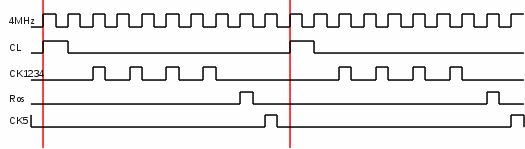
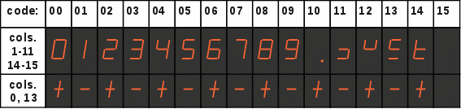
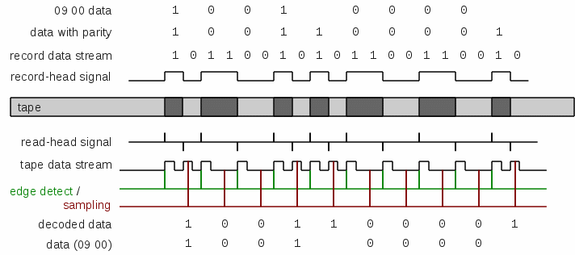

In the above diagram, fine lines represent single-bit (and serial) data paths, while thicker lines represent multiple bits of data in parallel (typically 4). Note, the hardware implements both parallel and serial paths, depending on registers and access operations.
The registers in the block diagram are explained here:
| Reg Name | Num Bits | Schem. Name | Access | Meaning/Use |
|---|---|---|---|---|
| MS | 4 | S | R/W | Machine State * |
| AH | 4 | T | R/W | Memory Address, Hi * |
| AM | 4 | U | R/W | Memory Address, Mid * |
| AL | 4 | V | R/W | Memory Address, Lo * |
| MR | 4 | CA | R/W | Data to/from RAM * |
| XR | 4 | CB | R/O | Data from ROM |
| DH | 4 | KA | R/W | Input Data, Hi * |
| DL | 4 | KB | R/W | Input Data, Lo * |
| XH | 4 | n/a | W/O | Expansion Output, Hi |
| XL | 4 | n/a | W/O | Expansion Output, Lo |
| XS | 3 | n/a | W/O | Expansion Select |
| I | 1 | CC | n/a | Internal Carry Flag |
| C | 1 | SC | n/a | Carry Flag |
| Z | 1 | Zo | n/a | Zero Flag |
| MS' | 4 | n/a | n/a | Saved MS |
| C' | 1 | n/a | n/a | Saved C |
| PE | 1 | OV | n/a | Prog Error |
| ME | 1 | ERR | n/a | Mach Error |
| KP | 1 | KBD | n/a | Key Pressed (input ready) |
| TM | 1 | TMR | W/O | Tape Motor |
| TW | 1 | WDT | W/O | Tape Write (record) Data |
| TR | 1 | MHG/MHO | R/O | Tape Read Data (one-shot) |
| PH | 20 | n/a | W/O | Print Hammers, shift register |
| PD | 4 | PC3-0 | R/O | Print Drum Row |
| PI | 1 | PC4 | R/O | Print Drum Index |
| PF | 1 | PPF | W/O | Print Paper Feed (one-shot) |
| SB | 1 | TKWS | R/O | CN-24 Strobe/Ack |
| CURRENT | 11 | n/a | n/a | Current Instruction Address |
| STACK1 | 10 | SAVI | n/a | Top of Stack |
| STACK2 | 10 | SAVI | n/a | 2nd on Stack |
| * Also used as general purpose registers, when non-conflicting | ||||
Microcode execution happens continuously, as long as the calculator has power. Each instruction contains the address of the next instruction, so there is no traditional "Instruction Counter" that increments. There is a "current instruction address" register, and two stack registers, used to control the flow of the microcode. In addition, certain keyboard conditions cause a hard-coded address to be forced into the current address register.
In normal operation, the current address is applied to the ROM and the resulting 42-bit word is latched into the instruction register. For normal instructions, the "next address" field of the instruction is fed-back into the current address register, with the low-order 2 bits coming from a decoding of the condition address fields, JL and JH.
For "call" instructions, the previous value of the current address register is saved into the "STACK1" register, also saving the "STACK1" previous contents into "STACK2".
For "return" instructions, the contents of the "next address" field is ignored and the current address register is loaded from STACK1 with the low-order bit forced to "1", and STACK1 is loaded form STACK2.
Note, a return instruction always returns to the odd address after the call-from address. This means that call instructions should always be at even addresses.
Microcode instruction execution sequence is terminated, and a new instruction address is forced, when certain keys are pressed. Because this is handled in hardware, these keys will immediately terminate any routine in progress and force the calculator to jump to the function programmed for that key.
| Key | PRIME | VERIFY PROG |
SET P.C. |
RECORD PROG |
S.M. | B.S. | INS | DEL |
|---|---|---|---|---|---|---|---|---|
| uCode Address |
000 | 001 | 002 | 003 | 004 | 005 | 006 | 007 |
In addition, the microcode logic allows for hard-wired overriding of certain instructions. The only instruction that is overridden is at 008, which is replaced with a "MR = KK; return" instruction where KK is wired to indicate the RAM size, as follows:
| KK | Model | Memory size | Steps | Registers |
|---|---|---|---|---|
| 1111 | 600-14 | 4Kx4 | 1848 | 247 |
| 0111 | 600-6 | 2Kx4 | 824 | 119 |
| 0011 | 600-2 | 1Kx4 | 312 | 55 |
This allows the microcode to detect what size memory is currently installed in the machine.
The system clock starts with a 4MHz crystal that feeds a flip-flop (producing a 2MHz signal), and a 5-bit Johnson Counter producing a series of "phase" clocks which repeat at 400KHz. One microcode instruction is entirely executed within the Johnson Counter cycle. This establishes the microcode instruction time (a "cycle") of 2.5uS, or 400,000 instructions per second.
The phase-clock signals, in combination with the 4MHz and 2MHz clocks, orchestrate the operation of the calculator. Early pulses are used to prepare hardware and save ("freeze") data, middle pulses are used to serially transfer data around the calculator registers, and late pulses are used to finish-up and finalize operations (such as accessing RAM or loading the next microcode instruction). Here are some key timing signals:

The instruction cycle is divided into three main phases: Early Latching, Serial Data Transfer, and Late Latching. The following activities are performed in the various phases:
| Early Latching |
Machine State saved: MS' = MS C' = C |
| AH,AM,AL latched to memory address decoders | |
| Serial Data Transfer |
Data shifted over A, B, and Z buses, to/from selected registers and through ALU * |
| "return" pop stack * | |
| "call" push stack * | |
| Late Latching |
RAM = MR * |
| MR = RAM * | |
| XR = ROM * | |
| CURRENT = next | |
| DH,DL = keyboard/peripheral * | |
| * Activities are dependent on selected microcode ops of instruction | |
Some notes on timing:
In summary, interpreting (and writing) microcode instructions requires careful consideration of these timing anomalies.
Editors Note: While the schematics seem to imply that input data is forced into DH and DL on every instruction while KP == 1, proper operation seems to dictate the DH and DL are latched only on instructions that use KP in a conditional address (JL == 110). Also, unlike the schematics, KP is reset when JL == 110 and not exclusively by ST == 1001 (RESET).
| Bits | 41 | 40 | 39 | 38 | 37 | 36 | 35 | 34 | 33 | 32 | 31 | 30 | 29 | 28 | 27 | 26 | 25 | 24 | 23 | 22 | 21 | 20 | 19 | 18 | 17 | 16 | 15 | 14 | 13 | 12 | 11 | 10 | 9 | 8 | 7 | 6 | 5 | 4 | 3 | 2 | 1 | 0 | X | X |
|---|---|---|---|---|---|---|---|---|---|---|---|---|---|---|---|---|---|---|---|---|---|---|---|---|---|---|---|---|---|---|---|---|---|---|---|---|---|---|---|---|---|---|---|---|
| ROMs | CM6020 | CM6030 | CM6040 | CM6050 | CM6060 | CM6070 | CM6080 | CM6090 | CM6160 | CM6170 | CM6180 | |||||||||||||||||||||||||||||||||
| Fields | AI | BI | ZO | AOP | AC | AN | MOP | KK | ST | JC | JAD | JH | JL | - | ||||||||||||||||||||||||||||||
The instruction fields have the following effects on the hardware.
The notation REG<n> refers to Bit "n" of register "REG".
| KK | |
|---|---|
| XXXX | Immediate operand |
|
|
| |||||||||||||||||||||||||||||||||||||||||||||||
| |||||||||||||||||||||||||||||||||||||||||||||||||
|
|
| |||||||||||||||||||||||||||||||||||||||||||||||||||||||||||||||||||||||||||||||||||||||||||||||||||||||||||||||||||||||||||||
|
|
| ||||||||||||||||||||||||||||||||||||||||||||||||||||||||||||||||||
|
|
||
| DH | DL | ||||||||
|---|---|---|---|---|---|---|---|---|---|
| 3 | 2 | 1 | 0 | 3 | 2 | 1 | 0 | ||
| MOP == 0111 | Out | n/a | n/a | PH<0> | |||||
| MOP == 1010 | In | n/a | n/a | TR | |||||
| MOP == 1011 | Out | n/a | n/a | TW | |||||
| MOP == 1100 | In | PD | PI | n/a | SB | n/a | |||
| JL == 110 (?) | In | Key/Periph Hi | Key/Periph Lo | ||||||
| Memory Usage (Model 600-14) | ||
|---|---|---|
| RAM Address | Reg # | Purpose |
| 0xfff - 0xff0 | 15 15 | System State |
| 0xfef - 0xfe0 | 15 14 | Display Register |
| 0xfdf - 0xfd0 | 15 13 | Sci Notation Display |
| 0xfcf - 0xfc0 | 15 12 | Floating Point Display |
| 0xfbf - 0xfb0 | 15 11 | Learn Mode Display |
| 0xfaf - 0xfa0 | 15 10 | Temp |
| 0xf9f - 0xf90 | 15 09 | Temp |
| 0xf8f - 0xf80 | 15 08 | Prog Subr Stack |
| 0xf7f - 0xf70 | 15 07 | Prog Subr Stack |
| 0xf6f - 0xf60 | 15 06 (246) | Steps 0000 - 0007 |
| 0xf5f - 0xf60 | 15 05 (245) | Steps 0008 - 0015 |
| 0xf4f - 0xf60 | 15 04 (244) | Steps 0016 - 0023 |
| ... etc ... | ||
| 0x12f - 0x120 | 01 02 (18) | Steps 1824 - 1831 |
| 0x11f - 0x110 | 01 01 (17) | Steps 1832 - 1839 |
| 0x10f - 0x100 | 01 00 (16) | Steps 1840 - 1847 |
| 0x0ff - 0x0f0 | 00 15 (15) | GP Reg, Left |
| 0x0ef - 0x0e0 | 00 14 (14) | GP Reg, Right |
| 0x0df - 0x0d0 | 00 13 (13) | GP Reg |
| 0x0cf - 0x0c0 | 00 12 (12) | GP Reg |
| 0x0bf - 0x0b0 | 00 11 (11) | GP Reg |
| 0x0af - 0x0a0 | 00 10 (10) | GP Reg |
| 0x09f - 0x090 | 00 09 (9) | GP Reg |
| 0x08f - 0x080 | 00 08 (8) | GP Reg |
| 0x07f - 0x070 | 00 07 (7) | GP Reg |
| 0x06f - 0x060 | 00 06 (6) | GP Reg |
| 0x05f - 0x050 | 00 05 (5) | GP Reg |
| 0x04f - 0x040 | 00 04 (4) | GP Reg |
| 0x03f - 0x030 | 00 03 (3) | GP Reg |
| 0x02f - 0x020 | 00 02 (2) | GP Reg |
| 0x01f - 0x010 | 00 01 (1) | GP Reg * |
| 0x00f - 0x000 | 00 00 (0) | GP Reg * |
| * Certain commands depend on values in registers 0 and 1. For example, plotting commands expect 0 to contain the Y delta, and 1 the X delta | ||
The microcode refreshes the display by sequentially loading each digit from memory, and pausing for a very long time. The display is fed directly from the output latch of RAM and the AL register. AL contains the column (digit) number to enable, and the RAM latch contains the code for the digit to be displayed.
The display decodes digit values differently depending on the column. Columns 0 and 13 are "sign" digits and will only display "+", "-", and blank. Column 12 is hard-wired blank on the circuit board, but internally the microcode maintains the digit value and even refreshes it. The columns will display symbols according to the following table:

For example, RE 01 will cause the contents of register 01 to be copied into 15 14, and then 15 14 will be formatted for floating point and scientific notation and stored, respectively, in 15 12 and 15 13. Which ever mode is currently selected via the "Fl ↔ Sc" pushbutton will determmine which register (15 12 or 15 13) will be refreshed to the display.
Depending on the state of the mode switches, the display refresh routine will refresh from register 15 13 (Sci notation), 15 12 (Floating point), or 15 11 (Learn modes). These "registers" contain the pre-formated pattern to be displayed in each case. For example, after PRIME, these registers will contain:
| 15 11: | 15 | 00 | 00 | 00 | 00 | 15 | 15 | 00 | 00 | 15 | 00 | 00 | 15 | 15 | 15 | 15 | |
|---|---|---|---|---|---|---|---|---|---|---|---|---|---|---|---|---|---|
| 15 12: | 00 | 00 | 10 | 00 | 00 | 00 | 00 | 00 | 00 | 00 | 00 | 00 | 00 | 15 | 15 | 15 | |
| 15 13: | 00 | 00 | 10 | 00 | 00 | 00 | 00 | 00 | 00 | 00 | 00 | 00 | 00 | 00 | 00 | 00 |
| column: row: |
0 |
1 |
2 |
3 |
4 |
5 |
6 |
7 |
8 |
9 |
10 |
11 |
12 |
13 |
14 |
15 |
16 |
17 |
18 |
19 |
20 |
|---|---|---|---|---|---|---|---|---|---|---|---|---|---|---|---|---|---|---|---|---|---|
| 00 | 0 | 0 | 0 | 0 | 0 | 0 | 0 | 0 | 0 | 0 | 0 | 0 | 0 | 0 | 0 | 0 | E | 0 | S | M | X |
| 01 | 1 | 1 | 1 | 1 | 1 | 1 | 1 | 1 | 1 | 1 | 1 | 1 | 1 | 1 | 1 | 1 | T | 1 | RE | ST | Y |
| 02 | 2 | 2 | 2 | 2 | 2 | 2 | 2 | 2 | 2 | 2 | 2 | 2 | 2 | 2 | 2 | 2 | + | 2 | W | α | Z |
| 03 | 3 | 3 | 3 | 3 | 3 | 3 | 3 | 3 | 3 | 3 | 3 | 3 | 3 | 3 | 3 | 3 | - | 3 | GO | SP | A |
| 04 | 4 | 4 | 4 | 4 | 4 | 4 | 4 | 4 | 4 | 4 | 4 | 4 | 4 | 4 | 4 | 4 | × | 4 | Jo | Jø | B |
| 05 | 5 | 5 | 5 | 5 | 5 | 5 | 5 | 5 | 5 | 5 | 5 | 5 | 5 | 5 | 5 | 5 | ÷ | 5 | J+ | Je | C |
| 06 | 6 | 6 | 6 | 6 | 6 | 6 | 6 | 6 | 6 | 6 | 6 | 6 | 6 | 6 | 6 | 6 | ST | 6 | SN | S-1 | D |
| 07 | 7 | 7 | 7 | 7 | 7 | 7 | 7 | 7 | 7 | 7 | 7 | 7 | 7 | 7 | 7 | 7 | RE | 7 | CS | C-1 | E |
| 08 | 8 | 8 | 8 | 8 | 8 | 8 | 8 | 8 | 8 | 8 | 8 | 8 | 8 | 8 | 8 | 8 | * | 8 | TN | T-1 | F |
| 09 | 9 | 9 | 9 | 9 | 9 | 9 | 9 | 9 | 9 | 9 | 9 | 9 | 9 | 9 | 9 | 9 | * | 9 | RD | DR | G |
| 10 | . | . | . | . | . | . | . | . | . | . | . | . | . | . | . | . | f | 10 | LN | LG | H |
| 11 | ◯ | ◯ | ◯ | ◯ | ◯ | ◯ | ◯ | ◯ | ◯ | ◯ | ◯ | ◯ | ◯ | ◯ | ◯ | ◯ | F | 11 | ex | 10x | I |
| 12 | . | . | . | . | O | V | E | R | F | L | O | W | . | . | . | . | A | 12 | x2 | I | J |
| 13 | + | + | + | + | + | + | + | + | + | + | + | + | + | + | + | + | B | 13 | √x | |x| | K |
| 14 | - | - | - | - | - | - | - | - | - | - | - | - | - | - | - | - | C | 14 | LP | EP | L |
| 15 | D | 15 | 1/X | RT | M |
Similar to the hard-wired-blank position on the display, column 15 of the printer is also not connected and cannot be printed.
When printing, the calculator builds a pattern in register 15 09 that represents the first 15 columns (0-14) to be printed. The last 5 columns are formatted "on the fly" based on context, modes, and operations being performed.
With the printer turned on, the drum rotates and the hardware keeps track of which row is currently positioned at the hammers. When an instruction with MOP == 1100 is executed, the current drum position is loaded into DH and the row position signal is loaded into DL<3>. The calculator uses that information to determine when a row is in position to print and which row it is. As a particular row comes into position, the calculator checks all codes in the pattern and each place it matches the current drum position it sets a "1" bit in the hammer shift-register (setting a "0" where they do not match). The hammer bit is set in DL<0> and an instruction with MOP == 0111 is executed to shift the hammer bit into the register. When all 20 bits have been shifted (columns 0-14 and 16-20), the hammers fire and print that row of selected characters. The calculator then waits for the next row to rotate into position, and repeats the process for the next row code. When all 16 rows have been processed, the paper is advanced.
Because magnetic media only works when there are changes in magnetic fields, the encoding had to ensure that the magnetic field changed frequently. This means that, for example, a long string of zeroes must not result in a long period of blank tape. Instead, there is guaranteed to be a transition at the beginning of every bit, and a transition in the middle if the bit was a "1". In addition, a parity bit was added every 4 data bits, to help detect errors.
The timing of each bit was precise, because the tape read code had to be able to stay synchronized without saving state information or doing much processing. Each unit of output was 198 cycles (data bit width 396), and each program (tape image) was preceded by a 211,220 cycle (approximately 0.5 second) blank gap (no magnetic field transitions).
During read, the calculator waits for the "bit start" transition, then delays 272 cycles before sampling again. If the sample reveals that there was a second transition, then the bit is considered a "1", otherwise it is "0". From this stream, the calculator assembles nibbles and checks parity, loading data into memory.
Here is an example of writing 09 00 to tape and reading it back:

The code 09 00 is broken into two nibbles, and each assigned an odd parity bit. Then each 5 bit datum is encoded into the tape stream by converting "1" into either "1 0" or "0 1", and "0" into either "1 1" or "0 0", depending on the previous data to ensure that there is always a transition at the beginning of each bit. The resulting stream is fed to the record head and produces alternating segments of positive and negative magenetic fields on the tape.
During read, the changes between positive and negative magnetic fields show up as "blips" in the signal from the tape read head. These blips are fed into a "one-shot" flip-flop whose timing is set to about 97 cycles. This means that for 97 cycles after a transition there will be a "1" signal, and it will return to "0" after those 97 cycles.
The calculator monitors the signal from the one-shot. The first "1" it sees indicates the beginning of a bit. It then delays 272 cycles and checks the signal again. If it is still "1" (was actually re-triggered by a second transition) then the data bit is interpreted to be a "1". Otherwise, the data bit is interprented to be "0". These bits are assembled into a 4-bit word and a parity bit, which is then checked for odd parity and, if correct, the data word is stored in memory.
A parity error will cause the calculator to turn on the Mach Error flag (ME) and stop processing the tape.
Other problems with the tape will generally cause the calculator to "hang" with a blank display. Pressing PRIME is usually required in order to recover.